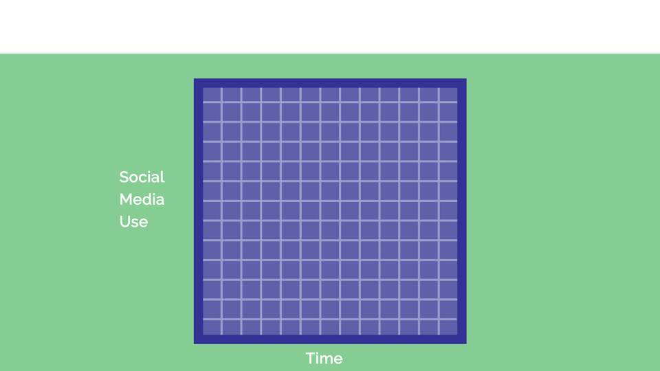
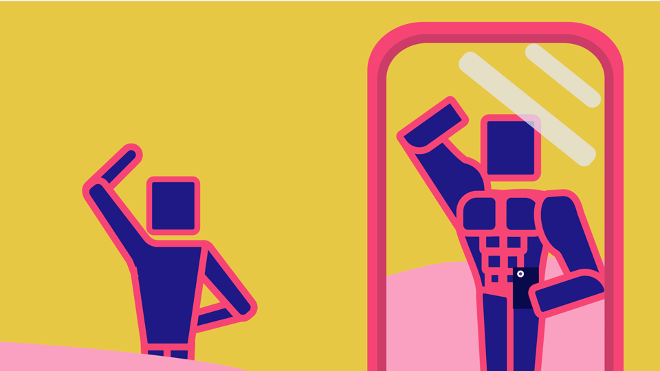
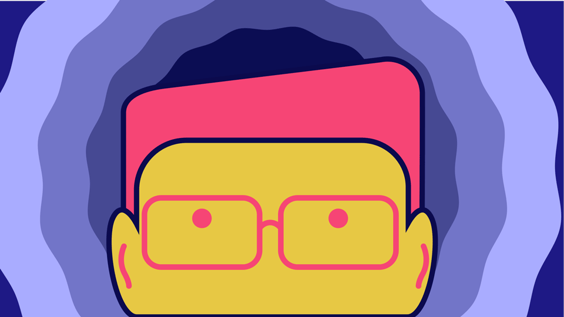

Introduction
Instagram serves as a platform where we can share our personal moments. The holiday we took to sunny Spain with our best friends, videos of our pets, because we know this clip of Fluffy standing is adorable, or even the fancy anniversary meal you had where the food was served on slates.
These moments will turn out overwhelmingly happy memories. In these cases Instagram and other social media, become a place where we feel happy, we share a laugh with friends and share cherished memories we want to keep forever.
However, have you ever felt the insecurity that comes before every post, when you’re over thinking over how you present yourself on social media?
Have you felt the dread, scrolling through a few hundreds of the almost identical photos from the amateur photo shoot you had in your family living room? All in search for the perfect pic?
Have you maybe felt that your life isn’t living up to the standards set in front of you, by your friends and idols alike on Instagram?
The more that I use social media, like Instagram, the more I feel I could be doing with my time. My life doesn’t seem half as exciting as the people I follow. It’s in times like this that my feelings of anxiety begin to outweigh the positive feelings I have for these social media platforms.
However, these are just a few personal and possibly relatable examples of how these anxiety-filled moments are making their way into my life as a user of social media.
Through this essay, my goal is to research how social media and in particular Instagram have been affecting the mental health and behaviours of average young people. These are the people in the developed western world that have grown up alongside the growth of the internet and the birth of social media. Therefore the age range I am most interested in researching is from ages 14 to 25.
I want to find out what studies have been taken looking into this issue of how social media is affecting our moods. I’ll explore the key facts and figures to show the depth of this issue. I will also be looking into leading companies and the products they have out there, and in development, that will help us to move forward alongside social media with its positives, all the while releasing ourselves of the social pressures of its negatives.
The Problem and the Figures
What is anxiety? Anxiety is fear; it is a natural response that is built into our DNA. We become anxious in situations that put is in danger or cause us harm, and this natural feeling of anxiety prevents that. Mostly it’s our fight or flight instincts to protect us from danger. Unfortunately, what is today generally called Anxiety, in actuality is medically called Generalised Anxiety Disorder or GAD. This disorder often contributes to a person experiencing a physically harmless situation such as social events, as uncomfortable or even dangerous.
Sixteen million people are living with mental illness in the UK, and many of these are suffering from anxiety and depression. Sadly these cases are on the rise, as documented in a study by the Mental Health Foundation from 2016:
What might this have to do with our social media usage. At the same time as a society, we are spending much more time on our smartphones and social media. It is apparent when looking into the results of the GlobalWebIndex survey in 2017.
It is also important to realise that due to the hidden nature of mental illness and wellbeing, it can make quantifying this research much more difficult. Therefore the data may not reflect the extent of the impact social media has on mental health.
However, what is clear from this research is that both usages of social media and cases of anxiety are on the rise. There is a chance that there is a correlation between these. Although many different factors can lead to an adverse effect on mental health and wellbeing of an individual, increased usage of social media may be a contributing factor.
Getting to the heart of my initial question, "are social media platforms causing young people to be miserable?" , I wanted to know if young people themselves believe they are being affected by their social media usage. In the UK an extensive survey of 14-24 year-olds, on their well-being around social media, was conducted by the charity, the Royal Society for Public Health, or (RSPH). Their goal was to find out how the most popular social media platforms have been affecting everything from sleep quality to the Fear of Missing Out, or FOMO.
Youtube
Youtube is a fantastic platform for learning new skills, for research and entertainment. Many online Vloggers have become role models to their community of viewers. Some blogger and creators feel it is important for their audience, that they speak out openly about the problems they face. Whether it be issues of mental illness, anxiety or lgbtq+ issues. I feel comforted as a watcher to have someone you know speak about these less talked about issues. Thankfully this has recently been changing for the better.
Snapchat
Although scoring negatively, Snapchat’s power to bring people together through silly pictures and filters have saved it from being too negatively perceived. Building relationships help to define a person and their character, helping to build up a person's self-worth. The light-hearted spirit of the app may help to ease the tension of its users allowing them to relax while using it.
These results highlight that there is a problem with Instagram and the experience its users are having when using the platform. The adverse effects on sleep could be because the people are spending too much time on the app. A recent study in June 2018 by SimilarWeb shows that the average user of Instagram spends 54 minutes in the app a day. It was 58 minutes for Facebook and 49.5 minutes for Snapchat.
This extra time on social media could be the reason for social media users feeling miserable. Neuroscientists at UC Berkeley, psychologists such as Dr. Allison Harvey, a co-author on the Journal of Neuroscience paper, have found that;
“Sleep deprivation fires up areas of the brain associated with emotional processing. The resulting pattern mimics the abnormal neural activity seen in anxiety disorders.”
-Dr. Allison Harvey
However, I feel like the negative scoring for body image views could have a more damaging effecting on a person's self-worth and overall feelings of misery. It’s also my opinion that Instagram should not be blamed entirely for our negative body image issues. Instead, it’s our culture that objectifies, sexualises and stands to make billions off of the unattainable and unrealistic standards of what beauty is perceived to be. It’s that culture that Instagram would hate to see disappear, as it is one that provides insane about of money through advertising on the platform.
What I would like to see on Instagram and all social media platforms, is a change to the products and content they push to their users. I would also like to see that platforms are teaching their users the importance of digital care as proof that they are acknowledging that the users could be negatively affected by the time spent on social media and the content they see on there.
Instagram Is Lying to You!
Now I want to focus in on Instagram. The RSPH survey has reported that 63 percent of Instagrams users have felt miserable when using it. If Instagram is making so many of us miserable, then why do we keep coming back? Instagram has a few key features which It hooks the user and keep them coming back.
Likes
The first feature and the core function of the app are its ‘likes.’ Do you know your highest liked picture on Instagram? Many people do. This Picture is held higher in importance than the other and may be internalised as a more pleasant memory. There has been much recent research behind the science of being ‘liked.’
In the book ‘Influence,’ by Robert Cinldinin, he explains that when someone does something for us, we feel obligated to return the favour. It boils down to an evolutionary advantage to encourage co-operation. Those who didn’t may have had a more difficult time surfing in the prehistoric world. This is referred to as classical conditioning and was demonstrated by Ivan Pavlov in his now infamous experiments. Pavlov conditioned dogs to salivate at the sound of a bell. He trained the dogs to respond in that way by ringing a bell before feeding them. This thinking isn’t inertly wrong when applied to people, although I do not agree with how he treated the poor animals. All knowledge can be exploited for gain and knowing how to use conditioning on humans for social media can be fruitful.
However, this trait has been taken advantage of in the modern digital world, especially on social platforms and Instagram. A person or small company will like and follow you to try to encourage a follow back. They will later unknowingly unfollow you. When you finally realise your mistake in judgment, you can internally feel betrayed for being tricked into a simple trap.
It’s not as simple as thinking something cool, as I guess it was intended to be used. The action of receiving a 'like' rewards us with a primal dosage of dopamine.
In 1980 Wolfram Schultz, a professor of neuroscience at Cambridge University concluded from his experiments that Dopamine is released from a gland in the brain as a reward for doing an action. Its role is also vital for many functions in learning, memory, attention, mood, and sleep.
However, the feeling can become associated with harmful activities, for example, Gambling. Natasha Schüll the author of ‘Addiction By Design’ says, “When a gambler feels favoured by luck, dopamine is released.” Being socially affirmed by likes on social media gives us the same rush as gambling because we never know when the next like is going to come.
Designers are specifically designing applications and businesses to draw in customers and increase engagement with a product. Nir Eyal has written a book on it; “Hooked: How to Build Habit-Forming Products.” Chapters titles in this book include “Trigger,” “Action” and “Variable Reward,” and all give great advice for creating incentives for a user to come back to your product. Eyal writes about the motivation of a user.
“All humans are motivated to seek pleasure and avoid pain, to seek hope and avoid fear and finally to seek social acceptance and avoid rejection.”
The more an action increases pleasure, hope, and acceptance; the motivation person has to carry out the task.
“How evil is tech?” is a The New York Times article from 2017 by David Brooks. In it, he states “Tech companies understand what causes dopamine surges in the brain and they lace their products with ‘hijacking techniques’ that lure us in and create ‘compulsion loops.’ This is his opinion on what is ‘the secret’ to why we compulsively check our Instagram and social media.
The Algorithm
The second feature is Instagram's algorithm. Instagram will cater to those that gather more attention, leading to you seeing more of the people you tend to look at or similar. This is all down to Instagrams algorithm. It will show you more of the same stuff. Let's say you may watch a video of some kittens coming out of a box and you might not hit 'like.' However you watched the video so that will be calculated into the algorithm and, what do you know, they show you more kittens being adorable, and you will watch those too.
Although what will typically tend to happen is you'll see:
Freelance Photographers, Personal Trainers, Makeup Artists, would all use Instagram as a free platform to promote their business. Their jobs are to please our eyes aesthetically. For a picture that you may have spent a half hour on choosing, these Instagram professionals may put in 3 hours producing these 'real-life moments' because, after all, it’s their businesses that stand to gain. However, they now clog our feed with beautiful images and a reminder of our imperfections. What we ultimately end up doing is comparing ourselves not to the everyday person but to the false images of people who work on these things every day.
Advertising
For many, this is their incentive to live their life to work to look great. Only a lucky few from this will result in earning through ads, product placement, and endorsements.
There is a substantial amount of money to be made from sponsors on Instagram. According to Forbes in 2016, an Instagram user with 100,000 followers can be paid $5,000 for a post made in partnership with a company or brand. This relatively low in comparison to what high-end celebrities who could be making $150,000 for an Instagram post alone.
Businesses use advertising on Instagram to amplify their brand image to the effect that they couldn't do before the time of social media. Before the rise of social media, mass media like tv, film, and radio had full control over advertising. The costs for these types of advertising could end up costing thousands or even millions of dollars. Only those businesses that were already successful could safely afford to have a broader reach.
Micro influencers to post your product on their Instagrams,and ebcome the products brand ambassadors. Since they have a positive reputation, people tend to associate this positivity with anything else in which they are involved. This cognitive bias is called the halo effect.
We are constantly beign bombarded by this invasive advertisingIt is understandable that we then begin to judge our self-worth with having these high-end products which are promoted by these social media stars and celebrities./p>
Quit social media?
So, should we quit using social media? The book ‘Deep Work,’ written by Cal Newport, is a self-help guide to gaining the ability to focus without distractions. The book aims to help us achieve more in less time while feeling more content with our work. A chapter is dedicated to Quitting Social Media. He explains the benefits of an “Internet Sabbatical,” as a break from the distraction generated by social media. Its Implied in an anecdote that there are only two options when it comes to our internet usage. Continue and “accept our current state as inevitable,” or to give up on the internet entirely. However, he continues by telling us that this is;
“much too crude to be useful.”
Newport refers to social media as a digital tool, and insist we should use them in the way a craftsman would approach tool selection. “Identify the core factor that determines success and happiness in your professional and personal life. Adopt a tool only if its positive impacts on these factors substantially outweigh the negatives.”
But, is it the social media or the tech habits that are the cause of our anxieties? People are intrinsically good, but systems are inherently heartless. Psychologist Dr. Aaron Montgomery in an interview with Forcefield said “Social media sites like Instagram and Facebook are not necessarily good or bad. Their value lies in how they are used and who is using them,”. I feel like this is essential to take into account as it reminds us that social media is just a tool.
In the book The Shallows by Nicholas Carr, it mentions that our increased use of technology, in general, could be a cause for increased anxiety in our society. I feel like this is an interesting alternative opinion for the increase in anxiety rates. It also explains that we are drawn to smaller amounts of information. As stated by Fred R. Barnard, 'A picture is worth ten thousand words,' this could be the reason why we are moving to Instagram and Snapchat for their 10-second stories and easily digestible information.
An alternative to dumping all your social media accounts is to consider creating an account that is separate and private to your official social media presence.
The term "Finsta", meaning fake Instagram, has been coined by teens in reference to the use of these accounts. Having this separate accounts required a few rules and a lot of thought to curate your friends. You should only follow your close friends that truly know you. Most Finsta accounts have only 12 to 15 followers because unlike Instagram there is no stigma attached to your follower count.
Contrary to how parents may be thinking, the content of these profiles are not a place where teen are share risqué photos, but its a place where teens feel separated from that. It a place where they feel relieved of the pressures of perfection and they can enjoy their private interests without feeling judged.
However, There are positives to using social media, and I don't believe we all should be rushing to abandon social media altogether. Again in the RSPH survey, it tells us the top 5 social media sites, Facebook, Twitter, Youtube, Instagram and Snapchat, all received favourable scores for self-identity, self-expression, community building, and emotional support.
RSPH is calling for social media companies to make changes. 71% said they’d support an introduction of a “heavy usage” warning within these apps or websites. Just this year Apple has come out with Screen Time in iOS 12, London with new Notification controls and Do Not Disturb.
Screen Time
Screen Time has a feature within it that gives control back to the user in regards to how they choose to spend their precious time while on their phones. When utilising the screen time feature a detailed report on how you spend your time is collated into a daily and weekly review. The time spent on different apps and the notifications received are all collected and displayed on charts for ease of comparison. This can be seen across devices when using the same Apple ID.
Being able to clearly see how much time is spent on a specific app can be shocking at first. However, it gives an incentive to start limiting the time you spend on your phone. Screen Time will also let you allocate specific times when you can use certain apps.
Notifications
View and control how app notifications are delivered, helping to reduce interruptions. Research by neuroscientists at the University of California, Berkeley, previously found that high levels of cortisol will create long-lasting brain changes, which can leave people in an almost constant state of fight-or-flight.
Smartphone notification cause cortisol to be released, this tensed state can last until the person can check the alert, Dr. Bea cautions. This pattern of tension and relief can influence the human brain like an addiction. When we gratify our urge to check an alert, it acts as a ‘reward’ for our brain and encourages repetition of the behaviour, Dr. Bea said.
Do Not Disturb
During Bedtime mode, the display brightness is lowered and hides all notifications that appear on the lock screen until the morning time. There are settings which allow you to personalise this feature. e.g. for times when you need to study as well as during a class when taking part in meetings or sitting together for dinner.
Google’s “Digital Wellbeing”
Google's digital wellbeing is very similar to Apple's screen time. I have the same ability to view how long you’ve used apps through visuals and graphs and controls which allow you to restrict your usage. Digital wellbeing has a unique feature called Wind Down. Notifications are limited before you go to bed and the display fades to a greyscale, to make it easier on the eyes. Harsh blue light emitted from screens effects the quality of sleep so this feature will help to tackle this issue.
Instagram and Facebook have also joined the mental wellbeing bandwagon, with an in-app setting to allow the user to set an amount of time they should limit themselves to using the app. A small popup with will appears notifying the user that they have used their allocated time. However, just like with the previous example of Screen Time, the popup can be easily dismissed.

Conclusion
Are social media platforms causing young people to be miserable? We have seen from the statistics that a correlation could be made between increasing cases of Generalised Anxiety Disorder and an increase in social media use. We also learned that when asked about their social media usage, Instagram was targeted by its users as a place where they are left feeling miserable after use. However, platforms like YouTube have brought awareness to issues of mental health through its creators coming forward and speaking to young adults and teens in their communities.
I have identified three different features within Instagram, advertising, likes and the algorithm, and researched why a user may be having feelings of anxiety due to these. I hope that through this essay we realise that this issue is not being ignored; with front-running apps like Apple’s Screen Times, Google’s “Digital Wellbeing” and the integration of elements from these into social media apps themselves.
Moving on I feel like social media and its ‘stars’ should be viewed much like as we view ‘reality’ TV and it stars, as an exaggerated fiction of produced real-life moments and people, made for entertainment purposes. Social media helps people to connect to each other. It has gone on to cause a massive globalisation process and has affected people from all over the world. So now it is time to limit the negative influence of Facebook and takes responsibility for future generations.